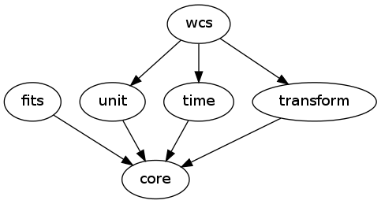

This reference section describes the schema files for the built-in tags in ASDF.
ASDF schemas are arranged into “modules”. All ASDF implementations must support the “core” module, but the other modules are optional.
The following graph shows the dependencies between modules:
